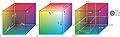

File:RGB farbwuerfel.jpg
Jump to navigation
Jump to search


No higher resolution available.
RGB_farbwuerfel.jpg (774 × 236 pixels, file size: 36 KB, MIME type: image/jpeg)
Structured data
Captions
Add a one-line explanation of what this file represents
RGB-Cube
File:RGB color cube.svg is a vector version of this file. It should be used in place of this raster image when not inferior.
File:RGB farbwuerfel.jpg File:RGB color cube.svg
For more information, see Help:SVG.
|

|
Permission is granted to copy, distribute and/or modify this document under the terms of the GNU Free Documentation License, Version 1.2 or any later version published by the Free Software Foundation; with no Invariant Sections, no Front-Cover Texts, and no Back-Cover Texts. A copy of the license is included in the section entitled GNU Free Documentation License. |
| This file is licensed under the Creative Commons Attribution-Share Alike 3.0 Unported license. | ||
| ||
| This licensing tag was added to this file as part of the GFDL licensing update. |
derivative works[edit]
{kind=link}
Derivative works of this file:
File history
Click on a date/time to view the file as it appeared at that time.
| Date/Time | Thumbnail | Dimensions | User | Comment | |
|---|---|---|---|---|---|
| current | 06:49, 14 November 2004 |  | 774 × 236 (36 KB) | Horst Frank~commonswiki (talk | contribs) | RGB-Cube |
- You cannot overwrite this file.
File usage on Commons
The following 2 pages uses this file:
File usage on other wikis
The following other wikis use this file:
- Usage on af.wikipedia.org
- Usage on an.wikipedia.org
- Usage on bg.wikipedia.org
- Usage on ca.wikipedia.org
- Usage on de.wikipedia.org
- Usage on de.wikibooks.org
- Usage on en.wikipedia.org
- Usage on eo.wikipedia.org
- Usage on es.wikipedia.org
- Usage on et.wikipedia.org
- Usage on fi.wikipedia.org
- Usage on fr.wikibooks.org
- Usage on hi.wikipedia.org
- Usage on hr.wikipedia.org
- Usage on hu.wikipedia.org
- Usage on it.wikipedia.org
- Usage on mk.wikipedia.org
- Usage on nl.wikipedia.org
- Usage on no.wikipedia.org
- Usage on oc.wikipedia.org
- Usage on olo.wikipedia.org
- Usage on pl.wikipedia.org
- Usage on pl.wikibooks.org
- Usage on sh.wikipedia.org
- Usage on sq.wikipedia.org
- Usage on sr.wikipedia.org
- Usage on sv.wikipedia.org
- Usage on tr.wikipedia.org
- Usage on zh.wikipedia.org
{kind=link}
{kind=link}
{kind=link}
{kind=link}
{kind=link}
{kind=link}
{kind=link}
{kind=link}
{kind=link}
{kind=link}